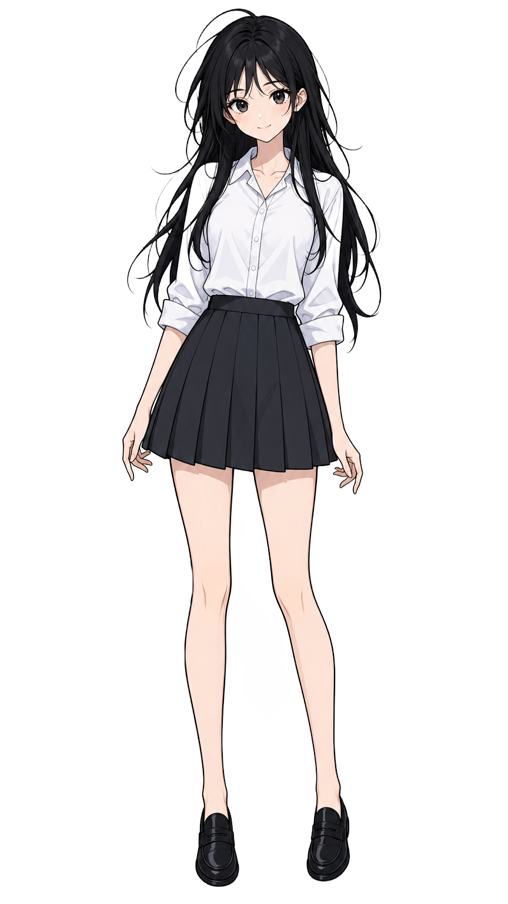
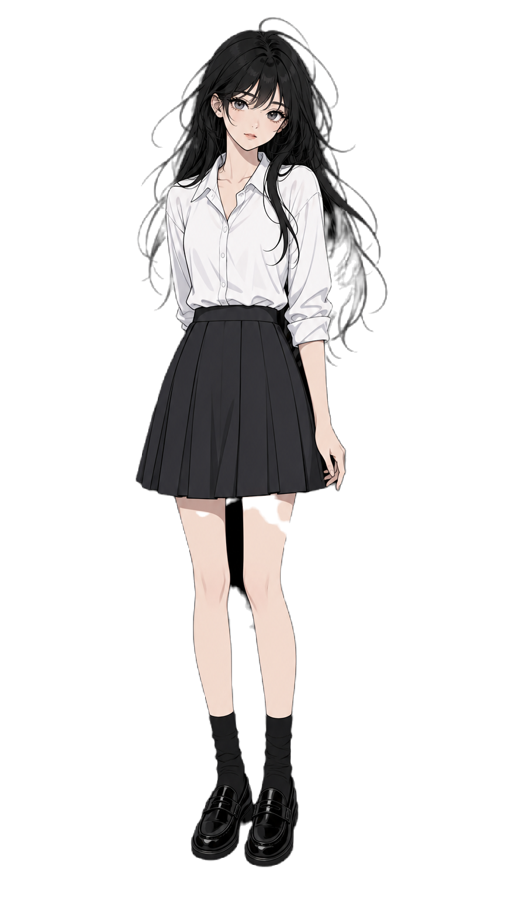
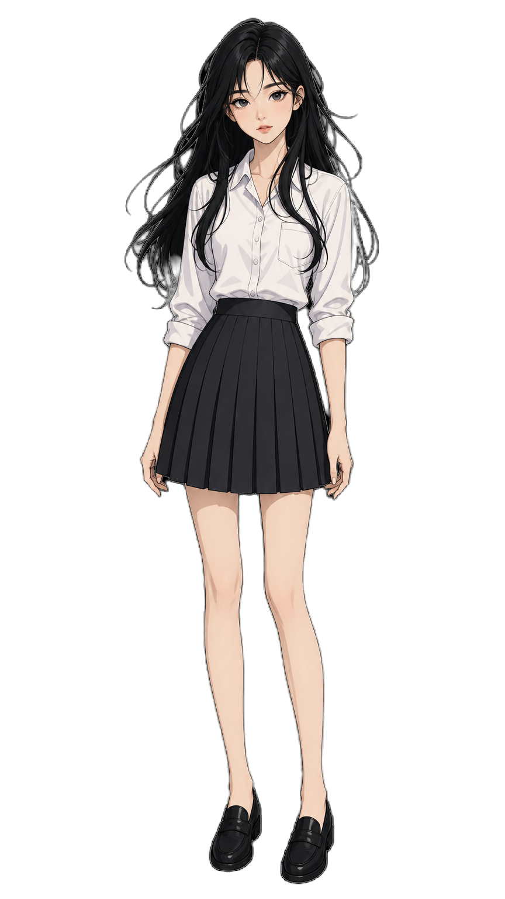
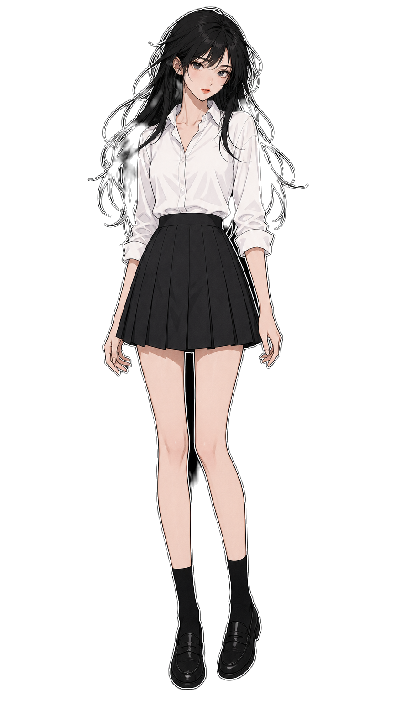

wispy_black_hair_white_blouse
原 montage当前绿幕
当前生产基线：纯 #00FF00 绿幕，无白边。
黑底光晕16.66破洞%3.62绿边1.18蓝边0.35白边%0.42连通度1.00

白边绿幕
旧方案：人物外轮廓 1-2px 纯白描边，重点看黑底白边。
黑底光晕59.61破洞%0.77绿边0.36蓝边0.02白边%46.22连通度0.94

深色轮廓
推荐候选：把边界增强改成风格内深色线稿。
黑底光晕11.46破洞%0.68绿边1.43蓝边0.03白边%0.02连通度1.00

蓝幕
潜力方案：蓝幕 + blue-key 后处理，重点看蓝 spill 和缺口。
黑底光晕13.18破洞%1.67绿边0.02蓝边7.78白边%0.72连通度1.00

白底黑边
新增：白底 + 自然深色外轮廓，纯 MODNet 通用后处理。
黑底光晕43.43破洞%2.66绿边0.18蓝边0.90白边%40.82连通度1.00

黑底白边
新增：黑底 + 浅/白色分离线，纯 MODNet 通用后处理。
黑底光晕31.55破洞%2.29绿边0.13蓝边0.22白边%4.52连通度1.00
黑底无额外白边
新增过夜：纯黑底，不加白色 sticker 外描边，只保留角色自然线稿。
黑底光晕19.23破洞%5.88绿边0.02蓝边0.09白边%0.38连通度0.99

黑底灰色细边
新增过夜：黑底 + 低亮度灰色 1px 分离线，测试能否保留低破洞同时减少纯白边。
黑底光晕21.53破洞%0.85绿边0.09蓝边0.22白边%0.25连通度1.00

黑底白边-温和压白边
派生：只降低最外圈近白像素 alpha，目标是减少贴纸白边。
黑底光晕47.62破洞%0.47绿边0.14蓝边0.25白边%3.64连通度0.99
黑底白边-强压白边
派生：更激进删除最外圈近白像素，测试白边/细节取舍。
黑底光晕32.84破洞%0.62绿边0.16蓝边0.33白边%1.52连通度0.97

黑底白边-alpha 收缩1px
派生：不看颜色，整体 alpha 收缩约 1px，测试简单形态学能否压边。
黑底光晕47.21破洞%1.05绿边0.14蓝边0.26白边%21.78连通度0.99